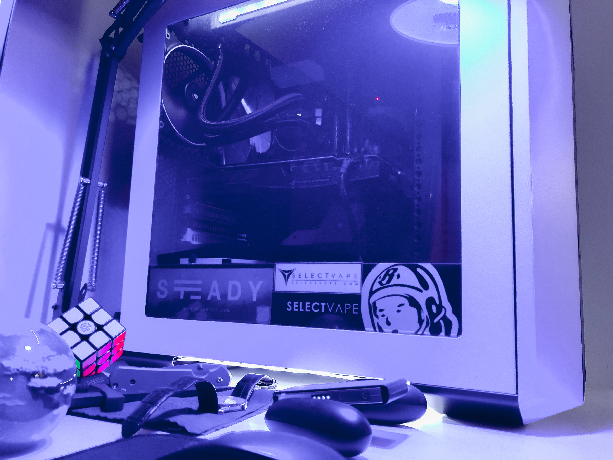
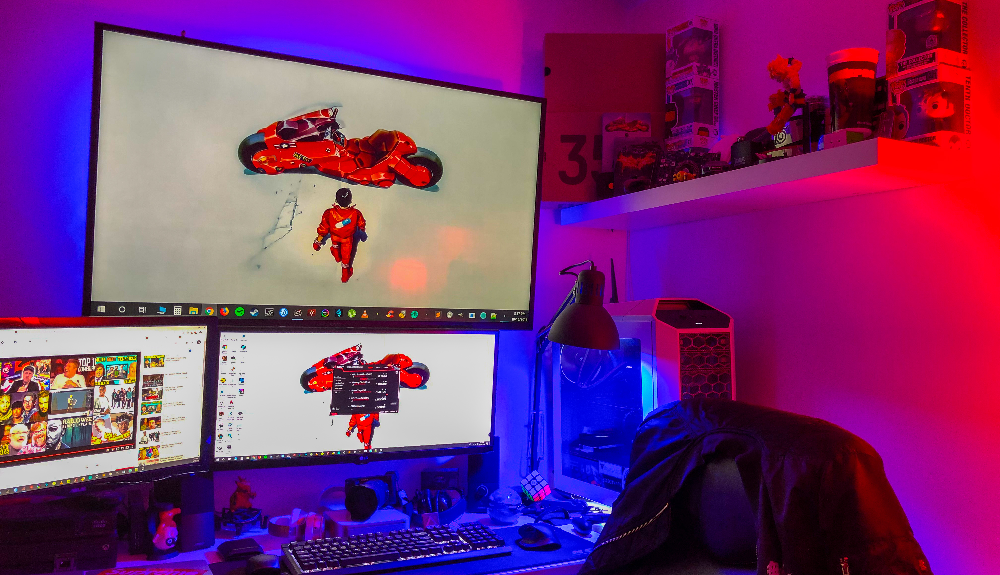
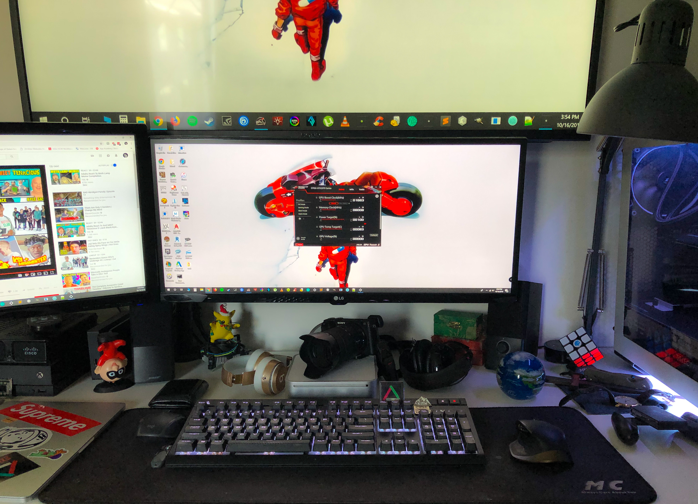

Although I do most of my work on my macbook pro. I still use my main computer, Zeus. Zeus is my first custom built PC that is now worth approximately $1,800 and is comprized of an 8th generation intel i7 processor, 16gb of RAM, and a gtx 1070 graphics card. For the full build list
click here.

 I keep the rest of my tech on my desk which I dubbed my desk Atlas. So what else do I have in addition to Zeus? I have dual monitors one of which being ultrawide. I also have a nintendo switch and xbox one X. I also keep my laptops on my desk just incase I need to take one somewhere. Above everything I have a 49 inch 4k sony tv which I use to switch between my consoles and computer.

The Latest
Recent Updates to my setup have been the addition to my computer collection with a lenovo yoga 720 and a 2009 mac mini. I have also have started using my sony a6300 in the past month so it has become part of both my setup and everyday carry and speaking of everyday carry I recently got a samsung external ssd with 500gb's of storage and it has been awesome to have the ability to save everything in one space.